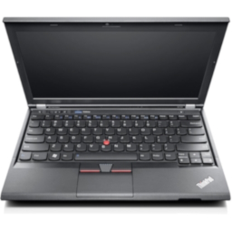

Think is a line of business and corporate focused laptop and tablet computers, made by IBM between 1992 and 2005, and since then by Lenovo. This page focuses on Post-Lenovo computers.
Thinkpads are split into several subcategories, you can find a good list here
| Photo | Machine | Year Of Introduction | CPU | RAM | Hard Drive | Modem/Networking | Cache | Sound Card | GPU | Bundled Operating System | Bundled Software | Notes |
|---|---|---|---|---|---|---|---|---|---|---|---|---|
|  | X230 | 2012 | Intel Core i5-3210M, 2 Cores, 2.50GHz Intel Core i5-3320M, 2 Cores, 2.60GHz Intel Core i5-3520M, 2 Cores, 2.90GHz Intel Core i7-3320M (Windows 8 Only), 2 Cores, 2.60GHz) Intel Core i7-3520M (Windows 8 Only), 2.90GHz |
4GB, 16GB Max |
128GB, SSD 180GB, SSD 500GB, 7200RPM 320GB 7200RPM |
CPU Wireless card, Gigabit Ethernet | 3MB Cache | Unknown | Intel HD Graphics 4000 | Windows 7 Professional (Via downgrade Rights) OR Windows 8 Pro |
Lenovo Message Center Plus (Windows 7 Only) ThinkVantage Power Manager (Windows 7 Only) ThinkVantage Product Recovery (Windows 7 Only) Adobe Acrobat Access Connections Skype for Windows Fingerprint Softwaer Lenovo Support (Application, Windows 8 Only) Lenovo Companion (Windows 8 Only) Lenovo QuickLaunch (Windows 8 Only) Lenovo Solution Center Lenovo Password Manager Microsoft Office Preloaded, No licence key. (Either Office 2010 or 2013?) |